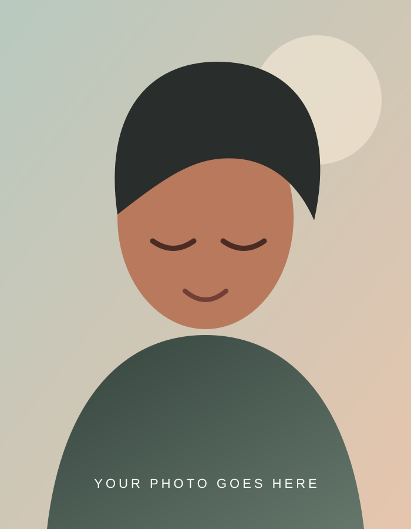
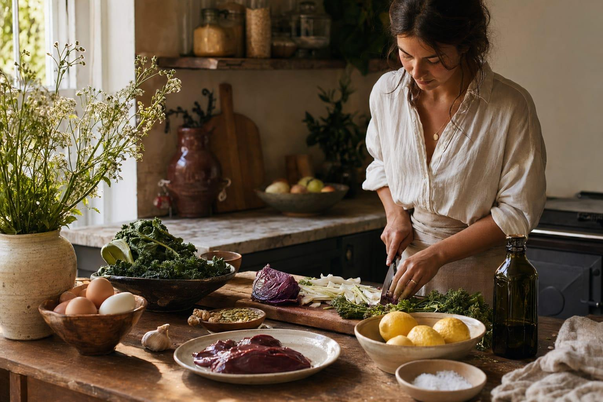
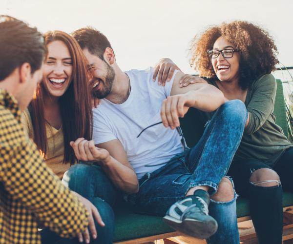
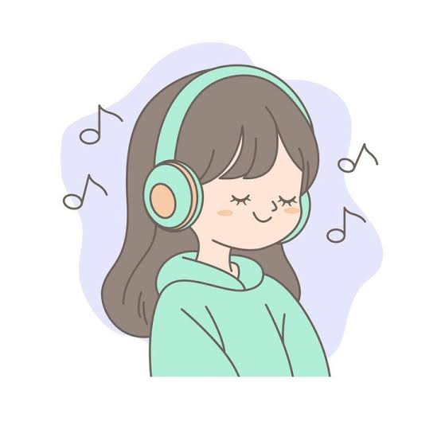
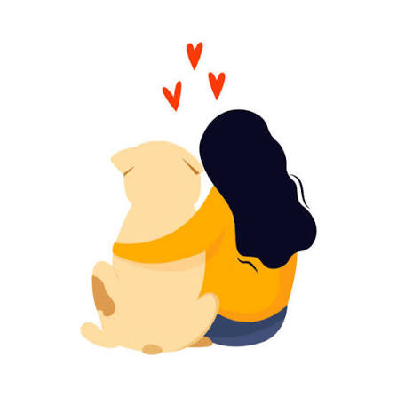

PRESENT · PROFESSIONAL JOURNEY
Graduate Trainee
PSiOG Digital
Beginning my professional journey, learning from new challenges and building practical skills as part of a team.
Learning in progressHello, I'm
Graduate Trainee · Aspiring Software Engineer
I'm very communicative, detail-oriented, and versatile. I enjoy learning, creating and finding new ways to grow every day.
“Learning, creating and growing every day.”

A PHOTO OF ME01 — THE PATH SO FAR
Every step has taught me something. Here's a snapshot of the experiences shaping my professional journey.
PRESENT · PROFESSIONAL JOURNEY
PSiOG Digital
Beginning my professional journey, learning from new challenges and building practical skills as part of a team.
Learning in progressEDUCATION
Sri Eshwar College of Engineering
Completed my undergraduate degree and developed a foundation in engineering, problem-solving and technology.
Class of 2026WHAT I'M WORKING TOWARDS
Keep exploring, strengthen my technical skills and turn curiosity into useful, thoughtful work.
One step at a time02 — OUTSIDE THE SCREEN
Life is made of little favourites. Tap a card to discover a little more about mine.
03 — MY PEOPLE
My favourite kind of support system. Including me, there are five people in my family — and our dog makes the home feel even more complete.
04 — LITTLE JOYS
Not everything needs a plan. Sometimes the best moments are the simple ones.

I enjoy trying new dishes, exploring flavours and spending time in the kitchen.

Outings, shopping, conversations and making unforgettable memories together.

From Anirudh and A. R. Rahman to Tamil kuthu tracks, music is part of my everyday life.

I love movies, web series and especially crime thrillers that keep me guessing.

Spending time with my four-legged friend and enjoying the little moments.
A little curious. A little creative. Always becoming.
05 — THE NEXT CHAPTER
I'm always happy to connect, learn and exchange ideas. Let's make something meaningful.
Get in touch